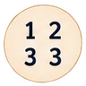
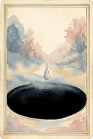
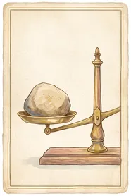
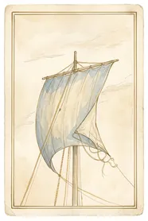
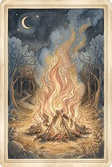
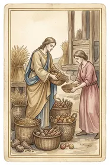
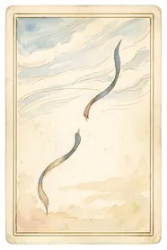
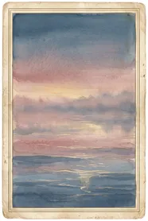

תאריך לידה, וזהו
בלי הרשמה ובלי חשבון. התאריך נשמר במכשיר שלך בלבד, ואפשר גם לדלג עליו.
תחזית יומית ויזואלית
שש שיטות תחזית מתמזגות לתחזית אחת, כדי שלא תצטרכי להתלבט בין חמש אפליקציות שאומרות דברים שונים.
חינם, בלי הרשמה, ובלי לבקש גישה לשום דבר.
שש השיטות מקיפות את הקלף, ואז נכנסות אליו. מה שנשאר הוא תחזית אחת.
"הקוסמופוליטן אמר לי שיהיה יום טוב לקבל החלטות כלכליות והטארוט אמר לי להיזהר משינויים פזיזים. קיבלתי שתי הודעות שסותרות אחת את השנייה תוך חמש דקות." מתוך ראיונות המשתמשים שקדמו למוצר
מי שקורא תחזיות יומיות כמעט תמיד קורא יותר מאחת. השיטות אומרות דברים שונים, ואין מקום אחד שמרכיב את זה לתשובה אחת. מזג הוא המקום הזה.
שלושה שלבים, והשני קורה מאחורי הקלעים.
בלי הרשמה ובלי חשבון. התאריך נשמר במכשיר שלך בלבד, ואפשר גם לדלג עליו.
לכל שיטה משקל, והמשקלים תמיד מסתכמים במאה. אפשר לראות בדיוק כמה כל אחת תרמה היום.
איור שאפשר לשמור ולשתף, ופסקה קצרה לקרוא בדרך. זהו כל המסך.
אלה ברירות המחדל. אסטרולוגיה מקבלת חצי כי היא היחידה שקוראת את מפת הלידה שלך, ולכן היא הקלט הכי אישי שיש. אפשר לשנות את כולן.

נומרולוגיההמספר של התאריך היום מול מספר הדרך שלך 15%זה החלק שרוב המוצרים בקטגוריה הזו לא כותבים, ואצלנו הוא היה החלטת עיצוב לפני שהיה טקסט שיווקי.
כל אחת מצוירת ביד באותה שפה. הכרטיסייה של היום נבחרת לפי מיקום הירח בקשת החודשית ולפי היסוד שהוא עומד בו, ולכן היא באמת של היום הזה.









לא. אין חשבון, אין סיסמה ואין אימייל. תאריך הלידה, אם תזיני אותו, נשמר במכשיר שלך בלבד.
התחזית היומית, דפי ההסבר, המפה האישית והארכיון הם חינם. מה שהמנוי פותח הוא שמירת משקולות משלך: לשנות את היחס בין השיטות ולשמור אותו.
ממאגר של שלושים ושתיים כרטיסיות מצוירות. הבחירה נגזרת מהתאריך: מיקום הירח בקשת החודשית קובע את השורה, והיסוד שהוא עומד בו קובע את העמודה.
כי היא היחידה מבין השש שקוראת את מפת הלידה שלך, ולכן היא הקלט הכי אישי שיש. השאר מתחלקות ביתרה. אפשר לשנות את היחס.
אחרי ביקור ראשון, כן. מזג נשמרת במכשיר ונפתחת גם בלי חיבור, ותחזיות שכבר ראית נפתחות מהארכיון.
בלי התלבטות בין חמש אפליקציות, ובלי שאף אחד יטען שהוא יודע מה יקרה לך.